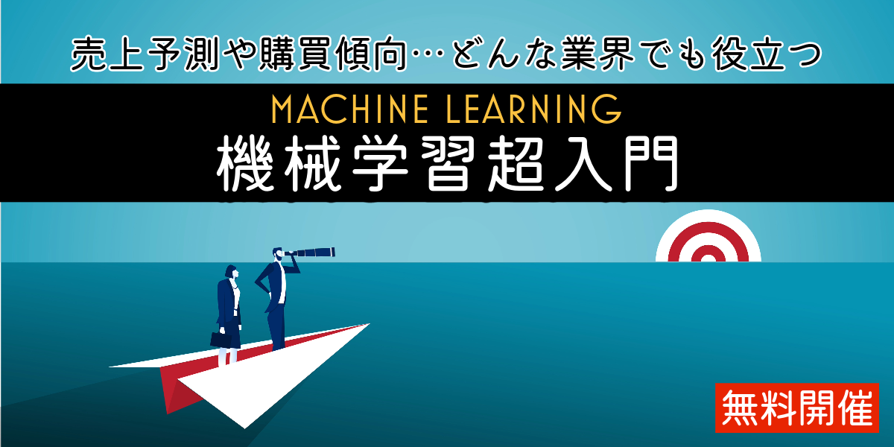
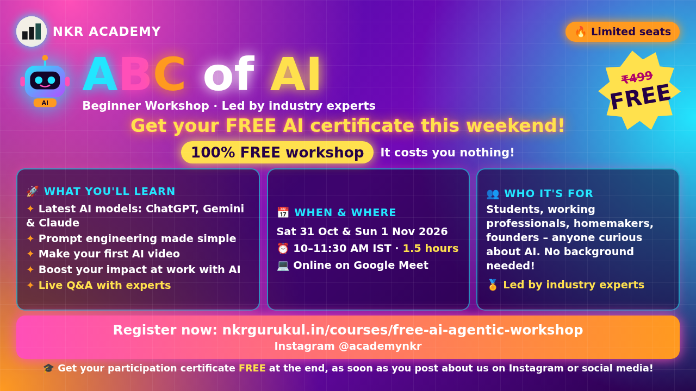
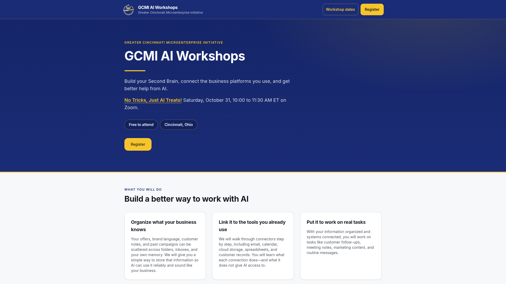
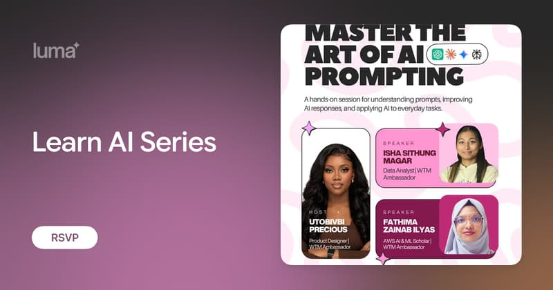

今日舉行 · 日語
【無料】生成AIを動かす“機械学習”を理解する講座
約 90 分超簡潔講解機器學習整體像：生成式 AI 背後嘅 ML 概念，唔需寫程式。Connpass 報名；名額有限。
Connpass 報名 →卷報 · 免費 AI 課程
二零二六 · 十月三十一日 · 星期六
篩選準則：優先收錄今日舉行嘅線上免費 AI 研討會／工作坊；並補上今日仍可報名、隨時開讀嘅常設免費課。連結以官方為準。
今日收錄 7 場線上免費專場（新加坡、日本、印度、北美同歐洲時區）。CSC 官方活動頁或會擋機械存取（Cloudflare 403），時間同免費線上資訊來自公開搜尋索引，連結仍指向官方頁。已剔除付費／限校友／實體課。本週日（11/1）深智數位講座見下方推廣。
本週日 · 線上講座推廣
把需求說清楚、把工作定義完整，並判斷與確認 AI 交付的成果，是這次講座的核心。
能接續任務的個人助理、自動分類郵件的 App，還有幾個簡短又好玩的圖像提示詞，本週日一起看！
👉 立即報名：https://forms.gle/hw1vpvbwnfRWQUmV6
💡 五大精彩看點
同一個專案，不必每次重新交代背景。「您的 dot」能記住工作目標與使用偏好，接續先前任務，協助追蹤進度、整理資訊。洪老師將介紹如何設定長期工作，以及雲端與本機工作環境的選擇。
上傳照片，輸入一個魔法提示詞，將人物轉成 Q 版造型，再延伸不同表情、去背，製作貼圖素材。也能指定物件，生成立體分解圖。洪老師將示範圖像提示詞，帶你看見不同的創作用途。
陳昭明老師將以 Jev 為例，介紹決策模型如何分類、評分，再依急迫性與信心程度分派處理，並比較決策模型與大型語言模型的速度、成本及輸出方式。
黃朝健老師將示範與 Codex 協作開發桌面 App，讀取 Gmail 的主旨、寄件者與內容，完成搜尋、分類與摘要，並將整理結果匯出 CSV。開發過程也會呈現如何交代功能、設定限制及提出修改要求。
益師傅將分享如何用 Codex 串起多份報告、Excel 分析與簡報製作，應用於會議報告與決策簡報。
⏰ 11/1（日）19:30–21:30 線上講座
📘《ChatGPT 對話 × Work × Codex：從生成式 AI 到 AI Agent 工作術》
👉 立即報名：https://forms.gle/hw1vpvbwnfRWQUmV6
深智數位股份有限公司

約 90 分超簡潔講解機器學習整體像：生成式 AI 背後嘅 ML 概念，唔需寫程式。Connpass 報名；名額有限。
Connpass 報名 →AI 趨勢、日常／職場應用，以及 SkillsFuture 相關資源。官方活動頁或會擋機械存取；請直接開連結報名核實時段。
報名／詳情 →
零基礎入門：ChatGPT／Gemini／Claude、提示技巧，同現場做一支 AI 短片。適合完全新手。
報名／詳情 →點樣將 UX／產品思維嵌入 AI 開發生命週期；唔係純 prompt 課。報名經 Meetup 官方頁。
Meetup 報名 →

AI literacy、prompt engineering，以及 AI safety & responsible use。香港凌晨舉行，適合夜貓。
Luma 報名 →以下為長期開放、可即刻自學嘅免費線上課程／教材；唔係今日專場，但適合錯過直播後補學。
十二章實作：Transformers、Datasets、Tokenizer、微調同推理。官方寫明完全免費、無廣告。適合想親手煉 LLM／NLP 嘅工程師。
開讀 →由 Agent 基礎到 smolagents、LlamaIndex、LangGraph；含 agentic RAG 同結業專案。想跟當下「代理式 AI」潮流可由此入門。
開讀 →經典免費深度學習課：電腦視覺、NLP、表格數據、部署；用 PyTorch／fastai。需一定 coding 經驗（建議 Python），可用免費雲端 GPU。
開讀 →開源課綱：提示工程到 RAG 同 Agents；Python／TypeScript 範例。可讀教材即學；跑程式可用 Azure／Foundry Local 等（部分 API 或需費用）。
開讀 →非技術向：生成式 AI 能做／不能做咩、提示工程同業務影響。影片免費；實驗室／證書或需 PRO。適合想建立共同語言嘅產品同管理層。
開讀 →Google 經典 ML 速成：概念、TensorFlow 練習同真實案例。搭配 Introduction to Generative AI 等「No charge」路徑，適合由 ML 基礎補起。
開讀 →官方學習中心：Claude 使用、AI Fluency、Claude Code、API／MCP 等。適合想系統學習用 Claude 同相關工具嘅人。
開讀 →